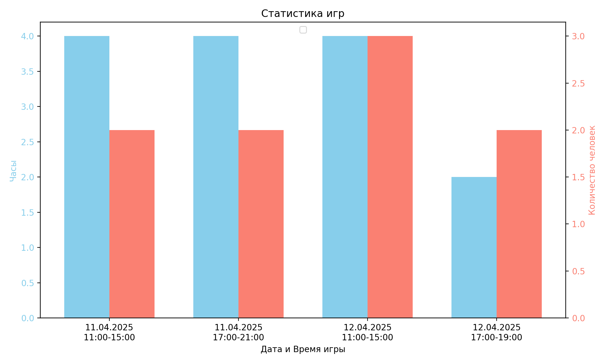

"Симулятор культиста" — это настольная ролевая игра, вдохновлённая одноимённой компьютерной игрой, разработанной студией Weather Factory. Игра погружает вас в мир лавкрафтовских ужасов, где вы играете роль оккультиста, стремящегося раскрыть тайны неизведанного и создать свой собственный культ.
Игра происходит в альтернативной Англии 1920-х годов, где вы начинаете как обычный человек с склонностью к оккультизму. Ваш персонаж будет исследовать запретные знания, взаимодействовать с потусторонними сущностями и создавать секту последователей. Сюжет разворачивается через нарративные события и выборы, которые влияют на развитие вашей истории.
Основа: Игра построена на нарративных принципах, где ваши действия и решения формируют повествование. Ваши нарративные права будут расширяться и уменьшаться в зависимости от ситуации, позволяя вам влиять на историю в разной степени. Повествование не привязано к конкретному времени суток, что позволяет вам переключаться между утренними и вечерними ситуациями в любой момент.
Исследования: Собирайте древние тексты, артефакты и проводите ритуалы, чтобы раскрыть тайны мира и продвигаться вперёд.
Карты и действия: Используйте карты для представления действий, объектов и сущностей. Перетаскивайте их на различные ячейки, чтобы выполнить действия, такие как работа, чтение книг или проведение ритуалов.
Ресурсы: Управляйте своими ресурсами — здоровьем, разумом, воображением и деньгами — чтобы поддерживать свой культ и расширять свои знания.
Ниже представлена статистика проведенных игровых сессий:
